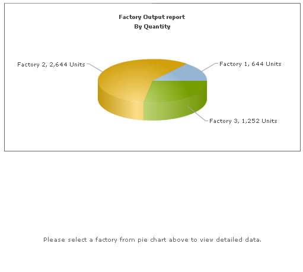
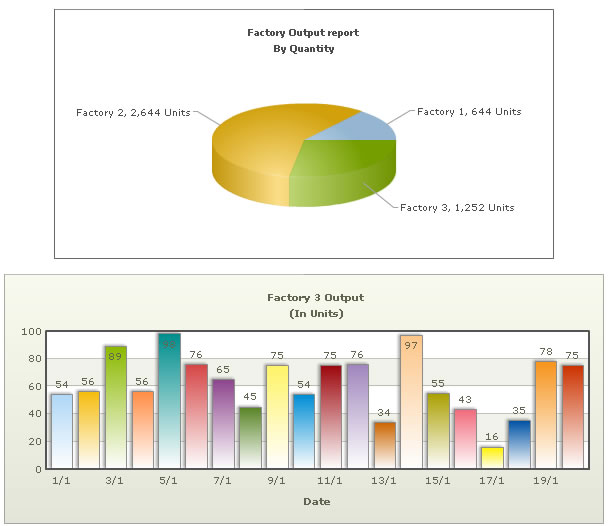

Combining FusionCharts, ColdFusion & JavaScript (dataURL) method |
FusionCharts v3 offers tremendous integration capabilities with JavaScript. You can easily use FusionCharts and JavaScript to create client side dynamic charts. Here, we'll see the JavaScript + URL method - where we ask the chart to fetch new data from server and update itself, without incurring any page refreshes. The entire application resides in a single page which makes it a seamless experience for your end viewers. Before you proceed with the contents in this page, we strictly recommend you to please go through the sections "How FusionCharts works?" and "Basic Examples", as we'll directly use a lot of concepts defined in those sections. The code discussed in this example is present in Download Package > Code > CFM > DB_JS_dataURL folder. |
| Mission for this example |
Let us first define what we want to achieve in this example. We'll carry on from our previous drill-down example and convert it into a single page example. In our previous example, we were showing the Production Summary of all the factories in a pie chart. When the user clicked on a pie slice, he was taken to another page, where a detailed date-wise chart was shown for the required factory. In this example, we'll assimilate both the charts in a single page and make them interact with each other using JavaScript, thereby making the end-user experience smooth. Effectively, we will do the following:
|
| Creating the charts container page |
| Both the charts and JavaScript functions to manipulate the charts is contained in Default.cfm. It has the following code: |
<HTML> <!--- Finally, close <chart> element ---> <!--- |
Before we get to the JavaScript functions, let's first see what we're doing in our CFM Code. We first create the XML data document for Pie chart - summary of factory output. For each <set>, we provide a JavaScript link to the updateChart() function and pass the factory ID to it as shown in the line below: <cfset strXML = strXML & "<set label='#factoryName#' value='#qryDetails.totOutput#' link='javaScript:updateChart(" & factoryID & ")'/>"> We now render the Pie 3D chart using dataXML method. The Pie 3D chart has its DOM Id as FactorySum: <cfoutput>#renderChart("../../FusionCharts/Pie3D.swf", "", strXML, "FactorySum", 500, 250, false, false)#</cfoutput> Now, we render an empty Column 2D chart with <chart></chart> data initially. We also change the "No data to display." error to a friendly and intuitive "Please select a factory from pie chart above to view detailed data." This chart has its DOM Id as FactoryDetailed. <cfoutput>#renderChart("../../FusionCharts/Column2D.swf?ChartNoDataText=Please select a factory from pie chart above to view detailed data.", "", "<chart></chart>", "FactoryDetailed", 600, 250, false, false)#</cfoutput> Effectively, our page is now set to show two charts. The pie chart shows the summary data provided to it using dataXML method. The column chart shows the above "friendly" error message. Now, when each pie slice is clicked, the updateChart() JavaScript function is called and the factoryID of the pie is passed to it. This function is responsible for updating the column chart and contains the following code: |
| function updateChart(factoryIndex){ //DataURL for the chart var strURL = "FactoryData.cfm?factoryId=" + factoryIndex; //Sometimes, the above URL and XML data gets cached by the browser. //If you want your charts to get new XML data on each request, //you can add the following line: //strURL = strURL + "&currTime=" + getTimeForURL(); //getTimeForURL method is defined below and needs to be included //This basically adds a ever-changing parameter which bluffs //the browser and forces it to re-load the XML data every time. //URLEncode it - NECESSARY. strURL = unescape(strURL); //Get reference to chart object using Dom ID "FactoryDetailed" var chartObj = getChartFromId("FactoryDetailed"); //Send request for XML chartObj.setDataURL(strURL); } |
Here,
If you've your chart objects inside <FORM> elements, you CANNOT use getChartFromId() method to get a reference to the chart, as the DOM Hierarchy of the chart object has changed. You'll get a JavaScript "<<ChartId>> is undefined" error. In these cases, you'll manually need to get a reference to the chart object. Or, you can opt to place the chart object outside <FORM> element. This completes our front-end for the app. We now just need to build FactoryData.cfm page, which is responsible to provide detailed data to column chart. It contains the following code: |
| <cfsilent> <!--- This page is invoked from Default.cfm. When the user clicks on a pie slice in Default.cfm, the factory Id is passed to this page. We need to get that factory id, get information from database and then write XML. First, get the factory Id ---> <cfset FactoryId = URL.FactoryId> <cfset intCounter = 0> <!--- Generate the chart element string ---> <cfset strXML = "<chart palette='2' caption='Factory " & FactoryId &" Output ' subcaption='(In Units)' xAxisName='Date' showValues='1' labelStep='2' >"> <!--- Now, we get the data for that factory ---> <cfloop query="qry"> |
In this page, we basically request the factory Id passed to it as querystring, query the database for required data, build XML document out of it and finally write it to output stream. When you now see the application, the initial state would look as under: |
|  |
| And when you click on a pie slice, the following would appear on the same page (without involving any browser refreshes): |
|  |
| This example demonstrated a very basic sample of the integration capabilities possible with FusionCharts v3. For advanced demos, you can see and download our FusionCharts Blueprint/Demo Applications. |